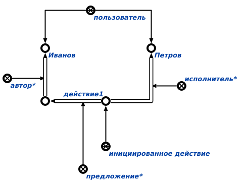

Команда поиска действий, закреплённых за конкретным исполнителем предназначена для поиска действий, закреплённых за конкретным исполнителем* с утверждения* менеджера*. Единственным аргументом команды является исполнитель*, один из разработчиков* базы знаний, за которым могут быть закреплены какие-то действия. Результатом выполнения команды является вывод всех инициированных действий, закреплённых за конкретным исполнителем. Например, для пользователя Петров могли бы быть найдены следующие закреплённые за ним действия:
